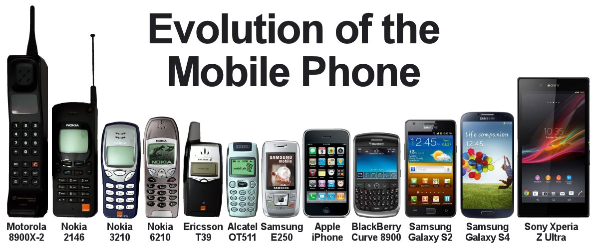

Pagina principala
Un telefon mobil sau telefon celular (întâlnit și sub formele substantivizate „un celular”, „un mobil”) este un dispozitiv electronic portabil care funcționează fără fir (prin radio) pe baza rețelei GSM și este folosit în general pentru comunicații personale la distanță mare. Telefoanele portabile care nu se bazează pe rețeaua GSM nu trebuie numite „mobile”, deși sunt deplasabile.

Miniaturizarea continuă a permis ca în zilele noastre în telefoanele mobile să se mai integreze o serie întreagă de funcțiuni suplimentare, ca de ex. dictafon, aparat de fotografiat și filmat, aparat de accesat Internetul și webul, GPS, radio și multe altele, astfel rezultând un nou gen de telefon mobil, foarte „inteligent”, numit smartphone.
Telefonul a devenit portabil la 20 februarie 1942, când americanul Donald M. Mitchell a cerut eliberarea unui brevet pentru telefonul său mobil, „Radio portabil pentru transmisie și recepție”. Dispozitivul transmitea folosind unde scurte, avea o rază de acțiune limitată și cântărea nu mai puțin de 2,5 kg. Au mai trecut 35 de ani până când telefoanele mobile au început să fie folosite pe scară largă, de oamenii obișnuiți. Inventatorul primului telefon mobil este considerat dr. Martin Cooper, fostul manager de sistem din cadrul companiei Motorola.[1][2] Primul apel de pe un telefon mobil a fost făcut de Cooper la 3 aprilie 1973. Abia în 1983 Motorola a prezentat primul telefon mobil comercial din lume, Dyna TAC 8000X.
În ziua de azi telefonia celulară sau mobilă se bazează pe standardul de comunicații și rețeaua GSM.
Prin contrast, există și sisteme de telefonie fără fir care nu se numesc „mobile”, deși și ele continuă să funcționeze dacă utilizatorul se deplasează: